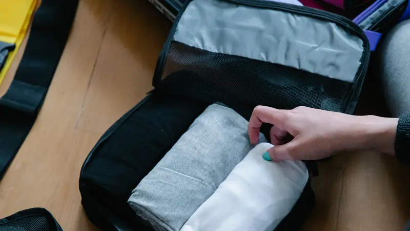
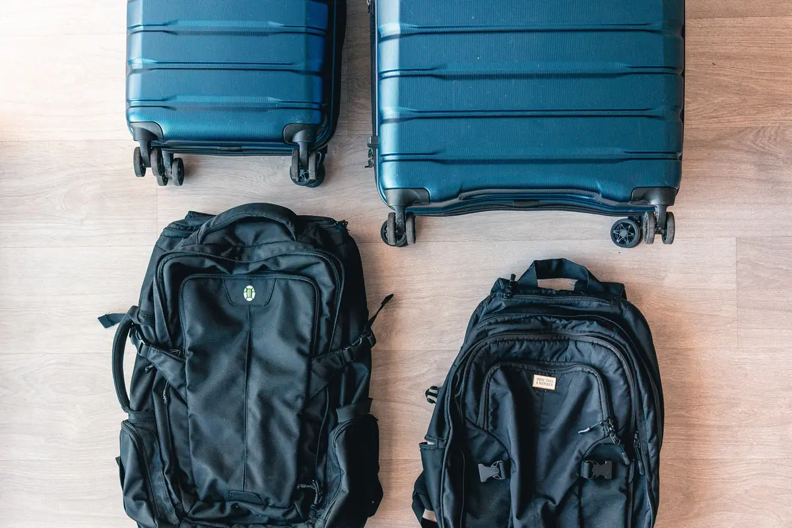

Budget & tips Anywhere
How I pack for two weeks in one carry-on bag
No checked luggage, no waiting at the carousel and no aching shoulders: my one-bag packing list.


I used to pack for every possible weather, event and mood. Then I spent a summer carrying a heavy bag up the stairs of old hotels, and I gave up. For the last five years I have travelled with one carry-on bag, whether the trip is three days or three weeks.
Here is how I do it, and what I have learned to leave behind.
Pack for a week, then wash
The secret is that a two-week trip only needs a week of clothes. I pack for about six days and plan to wash things halfway through, in a sink or at a launderette.
Everything has to go with everything else. I choose two or three colours that match, so any top works with any trousers.

What actually goes in
My list is short: five tops, two pairs of trousers or a skirt, one warm layer, one waterproof jacket, underwear and socks for six days, and one pair of shoes on my feet plus a light second pair.
Toiletries go in travel-sized bottles or as solid bars, which are lighter and cannot leak. Chargers and cables go in one small pouch, so they are easy to find.
What I leave behind
I no longer bring things just in case. If I need something I forgot, I can usually buy it, and that has happened far less often than I expected.
The biggest change was mental. With one bag I can take any train, climb any staircase and leave any hotel in five minutes.